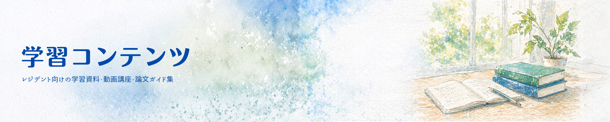
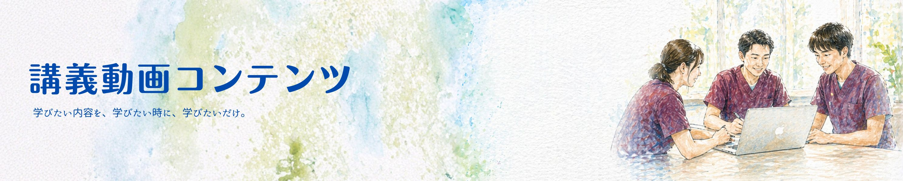
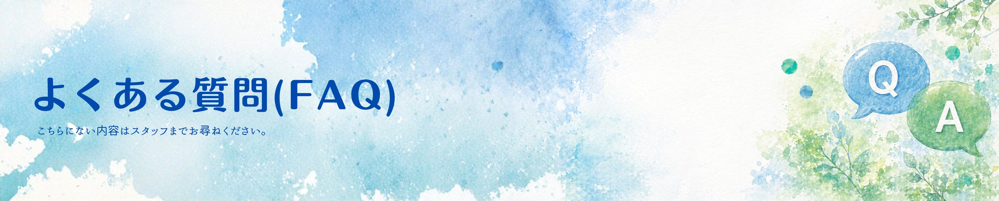

ご利用にあたって
患者の個人情報取り扱いには十分ご注意ください。このページはICUローテーター向けの情報提供ページです。最新の情報は担当指導医・スタッフにご確認ください。レイアウトはPCデスクトップ用に最適化しています。

当院ICUについて
病棟の概要と特徴
ローテされる先生へ
ローテ開始前のTo Do
スタッフ紹介
指導医・スタッフの一覧
スケジュール
1日・週間の流れ
ICUの方針・ルール
診療方針とICU独自ルール

ICU PASSPORT（レクチャーシート）
ICUローテーション中は学習のモチベーションを高める4種類のミッションを用意。詳細はこちらから


【ICU】注目論文・最新ガイドラインまとめ
ICU関連の最新ガイドライン・注目論文を臓器系統ごとに整理。原著PDFの内容のみに基づいた要約ページ集です。
【内科外来】注目論文・最新ガイドラインまとめ
内科外来で遭遇する疾患の最新ガイドライン・注目論文を臓器系統ごとに整理した要約ページ集です。
【研修医向け】疾患/症候マニュアル
収録済みの論文・ガイドラインの知見を疾患ごとに横断的に統合した総説ページ集です。
レジデントのICU資料集




3段階で進めましょう：
- まずICU PASSPORTのレクチャーを1〜2週で全修了
- ICU動画講座集（50本以上）を興味に応じて視聴
- 注目論文・ガイドラインまとめで深掘り
- 【研修医向け】マニュアルで疾患ごとの総説を確認
- 秘書 川田さん・部長 岡本先生に事前に連絡
- 病棟長・レジデント間での半休日の交換は自由（変更時も連絡すること）
- ① ICU入室時セットを展開（各種スコア入力を忘れずに！）
- ② 輸血・ラインなどの同意書4点セットを確認
詳細は ICU入室時のTo Do List を参照してください。
- まず患者の安全を最優先に確保
- 当直上級医に速やかに連絡（伝書鳩で怒る先生はいません）
- 必要に応じてRRS（院内急変対応システム）を起動
- 3分後には急変しているのはよくある話。ためらわず報告を
ICUのルール も併せて確認してください。
1患者あたり5〜7分を目標に、冗長な内容は削ぎましょう：
- By-system形式で各臓器の状態を簡潔に
- 朝の申し送りで得た夜間の変化を盛り込む
- カンファで決まった内容は患者リスト「本日の方針」に記載後、カルテに転写
詳細は ICUカンファレンス ページを参照してください。